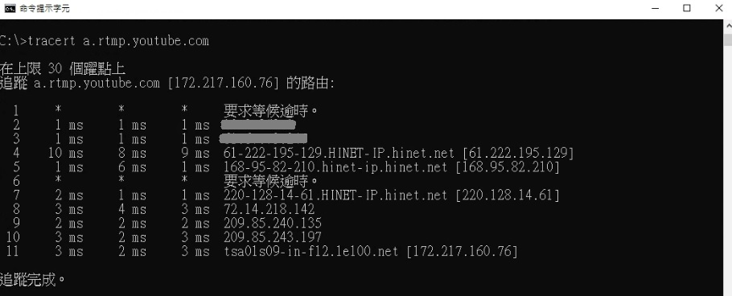
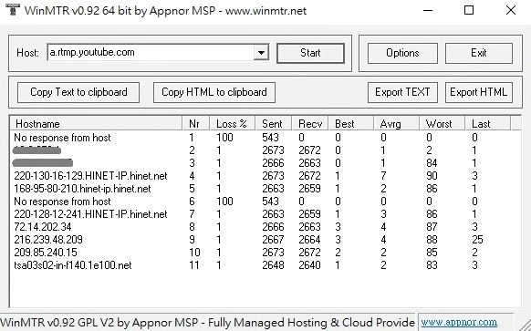

最近直播有遇到網路不穩的情況
但一句「網路卡卡」並不能有效的回報問題
網路是一個很複雜的東西
從你家到目的地必須經過很多個節點
為了釐清封包是在哪個點卡住了
我們可以使用 Windows 內建的 tracert 指令
如何使用 tracert
操作步驟
- 鍵盤同時按著
win+R - 輸入
cmd，並點擊確定 - 輸入
tracert -?查看使用方法
|
|
中括號表示非必填的參數，如 [-d]
而 tracert 和 target_name 為必填參數
target_name 是你要連接的目的地
可以打 IP 或 Host Name
IP 長得像 172.217.160.110
Host Name 就是你熟悉的 www.google.com
- 測試公司電腦到 YouTube 伺服器
輸入tracert a.rtmp.youtube.com

瞭解測試結果
最左邊是經過的網路節點，共有 11 個
中間 3 個時間，表示測試 3 次
最右邊是該節點的 IP 和 Host Name
1 和 6 顯示 * 並不是封包沒傳到
而是某些設備可能有防火牆，所以不會回覆我們
根據 IP 與 Host Name 可以判斷
- 1 ~ 3 在公司內部
- 4 ~ 7 在中華電信
- 8 ~ 11 在 Google 內部
所以如果
- 在公司內部很慢，就要找網管人員
- 在中華很慢，就打中華客服
- 在 Google 很慢，
就找 Google，但他可能不會理你
總之你在你家暢通
不代表外面的路也暢通
另外直播跟一般使用並不同
更看中的是 穩定度 (不掉封包)
而不是 延遲 (秒數) 要很小很小
當然你要 “即時互動” 就另當別論
如果只是看看網頁，瞬斷也不會有影響
但直播斷個五秒就沒畫面了 QQ
結合 ping 與 tracert 的 mtr
ping只能測兩點之間tracert可以測中間經過的點
但 tracert 只會做一次，不能持續監測
而 mtr 則是可以結合以上兩種的指令
mtr 是在 Linux 內建的指令
在 Windows 則是有好心人寫的 WinMTR 小軟體
操作步驟
- 到該 網址，點擊
Download - 解壓縮後，點擊
WinMTR.exe開啟軟體 - 輸入 IP 或 Host Name 後，點擊
Start開始測試 - 等待一段時間…
- 點擊
Stop結束測試

匯出測試結果
- 點擊
Copy可以複製測試結果到剪貼簿 - 點擊
Export可以將結果匯出成檔案
它支援了 純文字 和 HTML 格式
瞭解測試結果
Nr: 經過節點的數目Loss%: 丟包率Sent: 已傳送封包數量Recv: 成功接收封包數量Best: 最小回應時間 (ms)Aveg: 平均回應時間 (ms)Worst: 最大回應時間 (ms)Last: 最後一次的回應時間 (ms)
由 mtr 可以知道 延遲 與 丟包 兩者情況
下次如果遇到網路問題~
可以使用以上工具來釐清是 內部 還是 外部 問題
並且有耐心的長時間觀察
才能找出問題點喔！